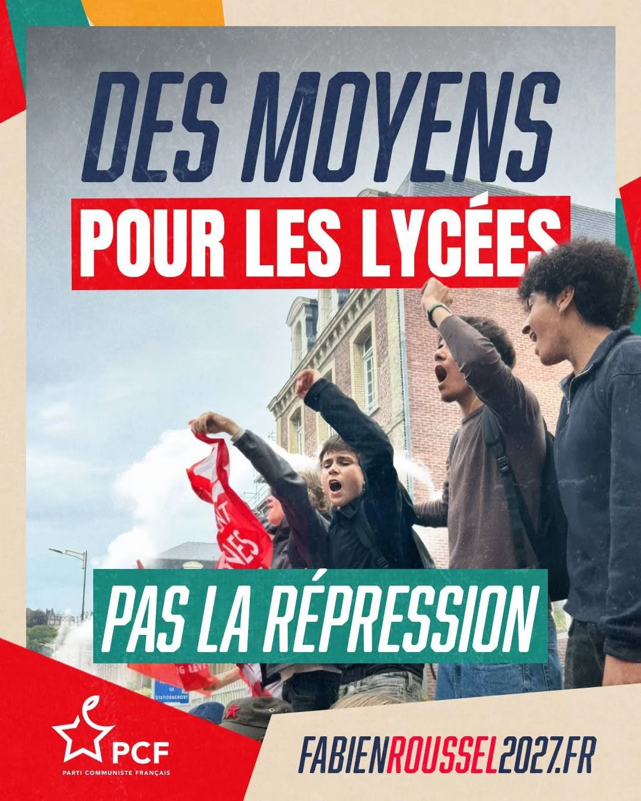

Publication relayée par le PCF 79
« Les lycéennes et les lycéens ont raison de se mobiliser ! »
Date de mise à jour indiquée par Facebook · 30 septembre 2026
Texte de la publication · PCF national
📢 Les lycéennes et les lycéens ont raison de se mobiliser ! Classes surchargées, manque de personnel, Parcoursup : leur colère est légitime et mérite des réponses plutôt que la répression orchestrée par le gouvernement.
🚩 Le PCF soutient leur mobilisation et appelle à investir massivement dans l’éducation pour donner à chacun les moyens de construire son avenir. N’attendons pas 2027 pour arracher des victoires !
🔗 Retrouvez le communiqué complet en commentaire.
Repères éditoriaux
Nous avons relayé le soutien du PCF à la mobilisation. Le texte nomme les classes surchargées, le manque de personnel et la sélection par Parcoursup parmi les motifs de la colère.

Sources
PCF national · publication relayée par le PCF 79 · fil Facebook et rapport Meta · AR-0002-FB-00670
À lire aussi · « La jeunesse mérite des réponses, pas la répression »